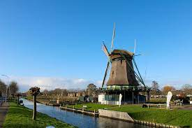

Feit 1
De naam Grootebroek is afgeleid van het Oudnederlandse woord "broek" dat verwijst naar een moerassig gebied. "Groote" betekent groot, dus de naam verwijst naar een groot moerassig gebied
Feit 2
Een van de opvallende gebouwen in Grootebroek is de Nederlands Hervormde Kerk, ook wel bekend als de Sint-Maartenkerk. Deze kerk dateert uit de 15e eeuw en is een beschermd monument.
Feit 3
De eerste vermeldingen van Grootebroek dateren uit de 14e eeuw. Het dorp heeft een lange geschiedenis, en het landschap werd al bewoond en gebruikt voor landbouw lang voordat het officieel als nederzetting werd erkend.
Feit 4
Het Poldermuseum in Grootebroek geeft een fascinerend inzicht in de geschiedenis en ontwikkeling van de polderstreek. Bezoekers kunnen hier meer te weten komen over de waterhuishouding, landbouw en de cultuur van de regio.
Feit 5
Grootebroek heeft een rijke geschiedenis van traditionele streekdracht. In het verleden droegen veel inwoners van het dorp nog dagelijks klederdracht. Hoewel het tegenwoordig niet meer zo gebruikelijk is in het dagelijks leven, wordt de streekdracht nog steeds met trots gedragen tijdens speciale evenementen en festiviteiten.
Dit is een luchtfoto van de plaats Grootebroek
Attractie
Hier heb je een molen die weer is opgebouwd naar een brand tijdens het nieuwjaarsfeest. Zorgbrasserie Bij de Molen is een brasserie waar genoten kan worden van o.a. een goede lunch, huisgemaakt gebak en heerlijke koffie! De lunch wordt verzorgd door mensen met een zorgvraag.